Next: Predefined spectral densities Up: Including environments Previous: Fermionic environment
Boson_* environments covers environment
Hamiltonians of the form
| 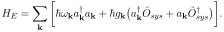 | (10) |
Boson_SysOp.
The command line arguments are similar to that for the Fermionic case, only
that Fermion_* is replaced by Boson_*.
The main differences to the Fermionic case are that initial thermal states
now follow Bose statistics and that the number of
excitations per mode is, in principle, unbounded. Here, we truncate the
Boson Hilbert space per mode and only account for the 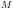 lowest states,
i.e. 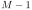 excitations. This information if provided to the code by the
parameter Boson_M, whose default value is 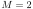.
As a first example, consider the radiative decay of an initially excited
two-level quantum emitter. The corresponding parameter file
radiative_decay.param is
te 2.5
dt 1e-1
threshold 1e-5
Boson_N_modes 20
Boson_SysOp {|0><1|_2}
Boson_rate 1
Boson_omega_min -10
Boson_omega_max 10
Boson_temperature 0
initial {|1><1|_2}
outfile radiative_decay.out
The resulting dynamics resembles the Markovian result with excited state occupations 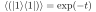. (Again, an environment with larger band width would lead to a more Markovian behaviour, but has to be discretized with more modes and therefore takes longer to calculate.).
One caveat for calculations at finite temperatures: The Jaynes-Cummings
Hamiltonian acts in the rotating frame. This means that the physical energy
of a Bosonic excitation is actually
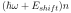, where
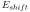 is the energy shift corresponding to the frequency of
the rotating frame. Hence, negative values of  are physically allowed
if their modulus is smaller than . For initial thermal states,
this value can be provided by
are physically allowed
if their modulus is smaller than . For initial thermal states,
this value can be provided by Boson_E_shift_init or
Boson_omega_shift_init. The latter is internally multiplied by 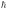.
For structured baths where every environment mode is coupled to the system
with a different strength, i.e., 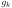 is not constant as a function of  ,
there are different ways to pass the values for
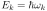 and
to the code. One way is to compile a file with two columns, the first
listing the values of (or 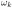) and the second listing
the corresponding values of . Please make sure the number of lines
matches
,
there are different ways to pass the values for
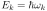 and
to the code. One way is to compile a file with two columns, the first
listing the values of (or 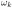) and the second listing
the corresponding values of . Please make sure the number of lines
matches Boson_N_modes. The name of this file can be passed to the
code by the argument Boson_E_g_from_table
(or Boson_omega_g_from_table).
For example, if we create the file “N20.tab” with the 20 lines
-9.5 {1/sqrt(2*pi)}
-8.5 {1/sqrt(2*pi)}
-7.5 {1/sqrt(2*pi)}
-6.5 {1/sqrt(2*pi)}
...
9.5 {1/sqrt(2*pi)}
the following driver file
te 2.5
dt 1e-1
threshold 1e-5
Boson_N_modes 20
Boson_SysOp {|0><1|_2}
Boson_omega_g_from_table N20.tab
Boson_temperature 0
initial {|1><1|_2}
outfile radiative_decay_tab.out
exactly reproduces the results in “radiative_decay.out”.
Another way, which is highly recommended, is to use instead a spectral density defined by
| 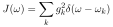 | (11) |
in the limit of infinitely fine discretization.
The spectral density has a more intuitive interpretation. For example,
in the case of radiative decay, the radiative decay rate in the Markov
limit of a system driven with frequency is
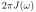,
a finding which we reproduce numerically next.
In contrast, to reproduce a given rate, the values of have to be modified
when the discretization changes.
A spectral density can be provided to the ACE code in the form of a file that
contains two columns corresponding to a set of sample points and
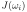. The sample points are not related to the
discretization used for defining the set of environment modes. Instead, the
frequency domain from Boson_omega_min to Boson_omega_max is
discretized into Boson_N_modes intervals and the corresponding values
for are obtained by linearly interpolating between the closest sample
points to in the spectral density file. This way, the spectral
density file has to be generated only once and can be reused for calculations
with different mode discretizations. In the following example, we reproduce
the above result for radiative decay, now using a flat spectral density.
To this end, generate the file Jflat.J with the following two lines
-100. 1. 100. 1.Therefore, all interpolated values of 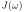 will be 1. We then use the parameter file
te 2.5
dt 1e-1
threshold 1e-5
Boson_N_modes 20
Boson_SysOp {|0><1|_2}
Boson_J_from_file Jflat.J
Boson_J_scale {1/(2*pi)}
Boson_omega_min -10
Boson_omega_max 10
Boson_temperature 0
initial {|1><1|_2}
outfile Jflat.out
The parameter Boson_J_scale rescales the spectral density by a global
factor for all sample points, in this case 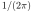, so the expected
Markovian rate will be
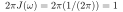. Please check
that this approach reproduces exactly the result for radiative decay
discussed above.